CHAPTER TWENTY-ONE

GLOSSARY OF THELEMIC AND TAROT TERMS
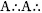
“It is commonly believed that stands for Argenteum Astrum (Silver Star). I have been informed in no uncertain terms that this is not the case. The was founded in 1907 by Crowley and George Cecil Jones. Based upon the classic Rosicrucian grade system of the Golden Dawn, the requires the Magician to actually achieve the states of consciousness and magical powers embodied in each of the ten sephiroth (i.e., the Magician is only an Adeptus Minor when he or she has actually achieved the Knowledge and Conversation of the Holy Guardian Angel). The is not a lodge system, and is entirely secret.”327Abrahadabra: “The word of the Aeon…the cypher of the Great Work.”328
Abyss: On the diagram of the Tree of Life the Abyss is the area (or rather, non-area) that separates the first three sephiroth (the supernal triad—the Ideal) from the seven remaining sephiroth (the Actual).
Adeptus Exemptus: Grade of an initiate who has achieved the level of consciousness represented by Chesed, the fourth sephira of the Tree of Life. Attainment of the next grade, that of Master of the Temple, entails crossing the Abyss.
Adeptus Minor: Grade of an initiate who has achieved the level of consciousness represented by Tiphareth the sixth sephira of the Tree of Life. In this grade, one attains the knowledge and conversation of the Holy Guardian Angel. Adjustment: Atu VIII of the Thoth Tarot. The traditional name of this card is Justice. See Lamed.
Aeon: Atu XX of the Thoth Tarot. The traditional name of this card is Judgment or The Last Judgment. The Aeon represents the birth of the Aeon of Horus, which signaled the last judgment (end of the world) of the previous Age, the Aeon of Osiris. See Aeon of Horus; Aeon of Isis; Aeon of Osiris; Shin; Fire; Spirit.
Aeon of Horus: The present magical age of human development. According to Crowley, it began at the Equinox of the Gods, March 20, 1904. Inspired by the knowledge that the Sun is perpetually shining (and not killed and reborn with each daily and yearly cycle), enlightened worshipers of the Aeon of Horus view life as a process of continual growth and strife by which one eventually develops the death-conquering consciousness of the continuity of existence. In the Aeon of Horus, it is the individual, not the tribe, family or nation, that is the basic unit of society.
Aeon of Isis: Magical age of human development at which time the pursuit of basic nourishment was the dominant theme in human consciousness and endeavor. The Earth and the powers of woman were deified as the source of all life and nourishment. This matriarchal age was characterized by the mysteries of the hunt, goddess worship, and cannibalism.
Aeon of Osiris: Magical age of human development at which time the mysteries of life and death were the dominant theme in human consciousness and endeavor. The Sun and powers of man were deified as the supreme source of all life. This patriarchal age was obsessed with overcoming death and was characterized by the mysteries of agriculture, human sacrifice, and the worship of male gods who are murdered and resurrected.
Ain—Nothing: Profound negativity, precluding even the concept of negative existence. First of the three negative veils from which Kether (One) emerges. See Fool.
Ain-Soph—Nothing without Limit: Second of the three negative veils from which Kether (One) emerges. See Fool.
Ain-Soph-Aur—Limitless Light: Third and last of the three negative veils from which Kether (One) emerges. See Fool.
Aleph—
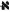
: Ox. Hebrew equivalent to English letter A and the number 1. On the Tree of Life, it is path 11, joining the first sephira, Kether, with the second sephira, Chokmah. Represents the element air. Tarot trump—the Fool.Angel: Traditionally, the man or angel is the Kerubic emblem of Aquarius. However, in the New Aeon (and as represented in the Thoth Tarot), the angel is the Kerubic emblem of Scorpio. See Kerubic Emblems.
Ankh-af-na Khonsu: Twenty-fifth dynasty Egyptian priest of Mentu and political figure. His self-painted funeral stèle was on display at Cairo's Boulak museum in the spring of 1904 and served as the magical talisman that triggered the psychic events leading up to the Equinox of the Gods and Crowley's reception of The Book of the Law.
Art: Atu XIV of the Thoth Tarot. The traditional name of this card is Temperance. See Samekh, Sagittarius.
Assiah: See Qabalistic Worlds.
Astrological Age: By observing the relative position of the Sun against the backdrop of the zodiacal band at the vernal equinox, ancient observers discovered that the Sun seemed to fall a bit short of its starting position of the previous year, resulting in the loss of approximately one full degree every seventy-two years. This makes the Sun appear to move backward across the belt of the zodiac at the approximate rate of one zodiac sign every two thousand one hundred sixty years. The ancients called this process the precession of the equinoxes. The time it takes to move from one sign to another is known as an astrological age. This phenomenon is actually caused by an extremely slow wobble of Earth's axis, which, like a spinning top, traces circles in space with its north and south poles. Astrologers generally agree we have recently entered or are about to enter the astrological Age of Aquarius.
Atu: The trumps of the Thoth Tarot are numbered by roman numerals and designated Atus. “Some Etymologists of a singularly idle disposition have tried to derive the French word “atout” from the ATU meaning House. It may seem simpler to suggest that ‘atout’ is short for ‘bon a tout’, meaning ‘good for anything’, because a trump will take any card of any suit.”329
Atziluth: See Qabalistic Worlds
Ayin—
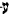
: Eye. Hebrew equivalent to English letters A, Au, or O, and the number seventy. On the Tree of Life, it is path 26, joining the sixth sephira, Tiphareth, with the eighth sephira, Hod. Represents the zodiac sign Capricorn. tarot trump—the Devil.Babalon: In the Thelemic pantheon, Babalon is one of two major aspects of female deity, Nuit being the other. Just as Nuit is paired with Hadit, her male counterpart, Babalon, joins with the Therion, the Beast. The following is excerpted from The Magick of Thelema.
Therion/Babalon as Chokmah/Binah—To the student of the Qabalah the easiest way to begin to understand Therion and Babalon is to conceptualize them as personifications of the second and third Sephiroth of the Tree of Life, Chokmah and Binah, respectively.
The second Sephira, Chokmah represents the original concept of duality, and as such is the chaotic despoiler of the perfect unity of the first Sephira, Kether. Chaos is another title of Chokmah and in certain Thelemic rituals is identified with Therion. Chokmah is also the Divine Will, the Logos, the Word whose vibration is the creative essence of the universe. As the supernal Father, Chokmah/Therion is the archetype of the lingam, the universal Male.
The third Sephira, Binah represents the original reconciliation and balance of the Divine Self (Kether) and the reflected Not Self (Chokmah). She is viewed as the all-receptive mate of Chokmah and when they are united the primal unity of Kether is realized. As Binah/Babalon resides just above the Abyss, She eventually receives unto Herself the totality of the life of the evolving universe. This universal life is symbolized as the “blood of the Saints” which She gathers up into her great cup (the Holy Grail). This she shares with the Beast, and they unite in drunken ecstasy. Thus she is called the Great Whore for in her “shamelessness” she receives all and refuses none.”330
Beast: In the Thelemic pantheon, the Beast is one of two major aspects of male deity, Hadit being the other. On the Tree of Life, the Beast is associated with the second sephira, Chokmah. See Babalon.
Beth—: House. Hebrew equivalent to English letter B and the number two. On the Tree of Life, it is path 12, joining the first sephira, Kether, with the third sephira, Binah. Represents the planet Mercury; Tarot trump—the Magus.
Binah—Understanding: The third sephira of the Tree of Life; the sphere of Saturn. Binah is also sephirotic home to the great mother, Babalon, and Nuit. In tarot, it is the home of the four court-card Queens, and the small-card threes.
Blood of the Martyrs (Saints): The consciousness and the essence of all evolving life. See the Chariot, Holy Grail, Babalon.
The Book of the Law: Liber AL vel Legis, The Book of the Law, was dictated to Crowley on April 8, 9, and 10, 1904, in Cairo by a præter human intelligence calling itself Aiwass. It is the primary holy book of Thelema and the source of doctrines relating to the Thoth Tarot, especially the concept of the Hebrew letter Tzaddi not being attributed to the Star trump.
Briah: See Qebalistic Worlds.
Bull—Taurus: See Kerubic Emblems.
Chariot: Atu VII of the Thoth Tarot. See Cheth.
Charioteer: Conveyor of the Holy Grail. Alternate title for Atu VII, the Chariot.
Chesed—Mercy: The fourth sephira on the Tree of Life; the sphere of Jupiter. As the first sephira below the Abyss, Chesed is the highest manifestation of the universe in actuality (the supernal triad above it being the inscrutable and unmanifest ideal). Consequently, Chesed is the perfect environment for the Demiurge (Demiourgos), the creator god who, because it seemingly created the universe, mistakenly thinks and acts as if it were the supreme being. Because it is not really the supreme being, the Demiurge has a real blind spot concerning its omnipotence, and, like a spoiled child, is constantly trying to prove its divinity. This leaves us with a creator who is violently insecure and paranoid. The jealous and psychotic behavior of the mythological composite gods associated with Chesed—Zeus/Jupiter/Jove/Jehovah—are frightfully consistent with this syndrome. In tarot, Chesed is the home of the small-card fours.
Cheth—: Fence. Hebrew equivalent to English letters Ch and the number eight. On the Tree of Life, it is path 18, joining the third sephira, Binah, with the fifth sephira, Geburah. Represents the zodiac sign Cancer. Tarot trump—the Chariot.
Chiah: See Parts of the Soul.
Chokmah—Wisdom: The second sephira of the Tree of Life; the sphere of the zodiac. Chokmah is also sephirotic home to the All-Father, the Beast, and Hadit. In tarot, Chokmah is the home of the four court-card Knights and the small-card twos.
Choronzon: See Daath.
Color Scales: The pure divine consciousness becomes obscured as it descends the ten sephiroth of each of the four Qabalistic worlds. The Qabalists imagine this descent of spirit into matter as a pure light broken into progressively lower vibrations. The four scales of color are, in descending order: The King, Queen, Prince, and Princess scales. See chapter 10.
Crowley, Edward Alexander (Aleister): 1875-1947. A very interesting and controversial person.
Crowley, Rose Edith: 1874-1932. Aleister Crowley's first wife. Older sister of Sir Gerald Festus Kelly (1879-1972), later president of the Royal Art Academy in England. Rose was very instrumental in the psychic events leading up to and including the reception of The Book of the Law. Crowley considered her his first Scarlet Woman (Shakti).
Cup: Magical weapon representing the magician's understanding. The cup represents the Neshamah (soul intuition) part of the soul, and the Qabalistic world of Briah (creative world).
Cup of Babalon: Binah personified as the vessel that receives the totality of the essence of al evolving life (blood of the Saints) and receives the Master of the Temple (8° = 3▫) after he or she has crossed the Abyss (the pathless area on the Tree of Life between the fourth sephira, Chesed, and the third sephira, Binah). See Atu XI, Lust; Atu VII, the Chariot; Atu XII, the Universe; Babalon; Binah; Master of the Temple; Nuit; and Holy Grail.
Cup of Fornication: See Holy Grail.
Cups: See Suits. In tarot readings, Cups often indicate matters of the heart, romance, love, creativity, art, and emotions.
Daath—Knowledge: A phantom or false sephira of the Tree of Life positioned in the Abyss separating the supernal triad from the rest of the Tree. While knowledge is a vital and necessary tool in one's initiatory journey, the reasoning faculties have their limits and must eventually be overcome before the highest levels of consciousness can be achieved. Daath is the false crown of reason, and the Abyss is the abode of Choronzon, archdemon of dispersion. It is this great devil's duty to engage the initiate in conversation—endless loops of rationalizations that prevent him or her from finally surrendering to transcendent consciousness.
Daleth—: Door. Hebrew equivalent to English letter D and the number four. On the Tree of Life, it is path 14, joining the second sephira, Chokmah, with the third sephira, Binah. Represents the planet Venus; Tarot trump III—the Empress.
Death: Atu XIII of the Thoth Tarot. See Nun.
Decan: Period often degrees in the zodiacal year. Each of the thirty-six small cards of the Thoth Tarot represents one of the thirty-six decans of the year. See Planets.
Demiurge (Demiourgos): See Chesed. In the Thoth Tarot, the behavior of the Demiurge is expressed in Atu X, Fortune, and the small-card fours.
Devil: Atu XV of the Thoth Tarot. See Ayin.
Disk: Magical weapon representing the magician's body and material environment. The disk represents the Nephesh (animal soul) part of the soul and the Qabalistic world of Assiah (material world).
Disks: See Suits. In tarot readings, disks often indicate practical and material matters, money, labor, home, investment, and the physical body.
Double Letters (Hebrew): The seven double letters of the Hebrew alphabet originally could be pronounced in two distinct ways. The Sephir Yetzirah attributes them to the seven planets of the ancients. Translations vary as to the planetary assignments. The Adepts of the Golden Dawn chose the following, as did Crowley for the Thoth Tarot:
Beth: Mercury (The Magus)
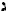
Gimel: Moon (The Priestess)Daleth: Venus (The Empress)
Kaph: Jupiter (Fortune)
Pé: Mars (The Tower)
Tau: Saturn (The Universe)
Eagle: Traditionally, the eagle is the Kerubic emblem of Scorpio. However, in the New Aeon (and as represented in the Thoth Tarot), the eagle is the Kerubic emblem of Aquarius. See Kerubic Emblems. In alchemy, the eagle can relate to the Moon and to fundamental forces and organic substances of female sexuality.
Emperor: Atu IV of the Thoth Tarot. See Tzaddi.
Empress: Atu III of the Thoth Tarot. See Daleth.
Enochian Aethyrs: Just as the Tree of Life classifies the heavens of human consciousness into ten major divisions (sephiroth), the Enochian magick of Dr. John Dee divides the heavens into thirty Aires, or Aethyrs. By ceremonially intoning various “calls” in the angelic language, one can systematically penetrate these Aethyrs and experience a vision unique to that level of consciousness. Crowley's visions of the thrity Aethyrs are chronicled in The Vision and The Voice,331 and directly influence the imagery found on several trumps, especially the Magus, the Lovers, the Chariot, Lust, Art, and the Universe.
Equinox of the Gods: See Aeon of Horus.
Etz Ha-Chayim : See Tree of Life.
Fool: Atu 0 of the Thoth Tarot. See Aleph.
Fortune: Atu X of the Thoth Tarot. Traditional name of this card is the Wheel of Fortune. See Kaph.
Geburah—Severity: The fifth sephira of the Tree Life; the sphere of Mars. In tarot, Geburah is home to the small-card fives.
Geomancy: The Earth Oracle—a technique of divination traditionally associated with the Earth and the elemental spirits of the Earth (gnomes). See Geomantic Figures.
Geomantic Figures: There are sixteen geomantic figures which, in a divinatory operation, are randomly generated. Each figure is a column of four levels. Each level either contains a single dot or two dots. The sixteen figures represent the twelve signs of the zodiac and the Moon's north and south nodes. There are two cards in the Thoth Tarot, the Seven and Eight of Disks, that use geomantic figures in their imagery.
Gimel—: Camel. Hebrew equivalent to English letter G and the number three. On the Tree of Life, it is path 13, joining the first sephira, Kether, with the sixth sephira, Tiphareth. Represents the planet Luna; Tarot trump II—the High Priestess.
Golden Dawn: Founded in 1888, the Order of the Golden Dawn was arguably the most influential magical society of the nineteenth and twentieth centuries. Members of the Grade of Adeptus Minor were encouraged to paint their own deck of tarot cards based upon esoteric designs and principles. Many of the cards of the Thoth Tarot are based on the Golden Dawn model. Aleister Crowley joined in 1898 and would later become the catalyst in the events that would bring about the Order's destruction. Nevertheless, the basic degree structure of the Golden Dawn would serve as the model for Crowley's Order of .
Gunas: “All the qualities that can be predicated of anything may be ascribed to one or more of these Gunas: Tamas is darkness, inertia, sloth, ignorance, death and the like; Rajas is energy, excitement, fire, brilliance, restlessness; Sattvas is calm, intelligence, lucidity and balance.”332
Hadit (alternate spelling “Hadith”): “The Second Deity of the Thelemic Trinity. Lover of Nuit. He is depicted on the Stèle of Revealing as a winged globe at the heart of Nuit. He is conceptualized as the infinity of an ultimately contracted universe; the point in the center of the circle. He is ‘the ubiquitous point of view, the only philosophically tenable conception of Reality.'333 [Perhaps the concept of the pre-'Big-Bang' negative singularity postulated by modern physics.] Qabalists may wish to consider the similarities to the First Veil of the Negative proceeding Kether, AIN (Nothing).”334
Hanged Man: Atu XII of the Thoth Tarot. See Mem.
Hé—: Window. Hebrew equivalent to English letters H or E and the number five. On the Tree of Life, it is path 15, joining the second sephira, Chokmah, with the sixth sephira, Tiphareth. Represents the zodiac sign Aquarius. Tarot trump—the Star.
Hermit: Atu IX of the Thoth Tarot. See Yod.
Heru-ra-ha: The single name for the twin forms of the Egyptian god Horus. Hoor-pa-kraat is the passive form, and Ra-Hoor Khut is the active form. As far as we know, Heru-ra-ha is a name found only in The Book of the Law, chapter II, verse 35: “The half of the word of Heru-ra-ha, called Hoor-pa-kraat and Ra-Hoor-Khut.” In the Thoth Tarot, Heru-ra-ha is found in his double form on Atu XX, the Aeon.
Hierophant: Atu V of the Thoth Tarot. See Vau. High Priestess: Atu II of the Thoth Tarot. See Gimel.
Hod—Splendor: The eighth sephira of the Tree of Life; the sphere of Mercury. In tarot, Hod is home to the small-card eights.
Holy Grail (Crowley spelled it Graal): See Cup of Babalon.
Holy Guardian Angel: Angelic being, or level of human consciousness personified as an angel, representing supreme spiritual realization of one's personal and devotional ideal. On the Tree of Life, this experience and level of consciousness is represented by the sixth sephira, Tiphareth. In the Thoth Tarot, the concept is echoed in the court-card Princes and the small-card sixes. See Adeptus Minor.
Hoor-pa-kraat: The passive form of the God Horus. Together with his twin brother, Ra-Hoor Khut, he becomes the composite deity Heru-ra-ha. In the Thoth Tarot, Hoor-pa-kraat is found on Atu XX, the Aeon. He is the large, transparent child-god standing in front of his brother, the enthroned Ra-Hoor Khut.
Horus: Egyptian god, son of Isis and Osiris. In Egyptian mythology, Horus avenges the murder of his father. See Aeon of Horus, Hoor-pa-kraat, and Ra-Hoor-Khut.
Isis: Egyptian goddess, sister-wife of Osiris and mother of Horus. In the Thoth Tarot, Isis is portrayed in various aspects in trumps the Priestess, the Empress, the Lovers, Lust, and the Star. See Aeon of Isis.
Kaph—
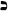
: Palm of hand. Hebrew equivalent to English letter K and the number twenty. On the Tree of Life, it is path 21, joining the fourth sephira, Chesed, with the seventh sephira, Netzach. Represents the planet Jupiter. Tarot trump—Fortune.Kerubic Emblems: In the Thoth Tarot, the Kerubs, or Angels of the Elements, can be found in the corners of the Hierophant and the Universe trumps and represent the fixed signs of the zodiac. Because of a revelation in Crowley's vision of the twenty-third Aethyr of The Vision and the Voice, the Kerubs of the New Aeon (and the Thoth Tarot) are as follows: lion (Leo), eagle (Aquarius), angel (Scorpio), and bull (Taurus).
Kether—The Crown: The first and highest sephira of the Tree of Life; the primum mobile. In tarot, Kether is the home of the small-card aces.
King Scale of Color: The King scale is the highest and represents the essence—the invisible foundation—of color.
Knight: In the Thoth Tarot, the Knight is the primary male figure of the court cards. He is the Yod of the Tetragrammaton and represents aspects of God the Father. He is the husband of the Queen and father of the Prince and Princess. (In most traditional decks he is called the King. He is the fiery aspect of his suit and is shown seated on a horse. His position on the Tree of Life is in the second sephira, Chokmah.) See Yod Hé Vau Hé.
Lamed—
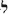
: Ox goad. Hebrew equivalent to English letter L and the number thirty. On the Tree of Life, it is path 22, joining the fifth sephira, Geburah, with the sixth sephira, Tiphareth. Represents the zodiac sign Libra. Tarot trump—Adjustment.Liber AL vel Legis: See The Book of the Law.
Lion: Symbol of the zodiac sign of Leo. In alchemy, the lion can relate to the Sun and to fundamental forces and organic substances of male sexuality. See Kerubic Emblems.
Lovers: Atu VI of theThoth Tarot. See Zain.
Lust: Atu XI of the Thoth Tarot. See Teth.
Magus: Atu I of theThothTarot. See Beth.
Magus: Grade of an initiate who has achieved the level of consciousness represented by Chokmah, the second sephira on the Tree of Life.
Malkuth—Kingdom: The tenth and lowest sephira of the Tree Life; the sphere of the Earth and material existence. In tarot, the home of the court-card Princesses, and the small-card tens.
Master of the Temple: Grade of an initiate who has crossed the Abyss and achieved the level of consciousness represented by Binah, the third sephira on the Tree of Life.
Mem—
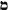
: Water. Hebrew equivalent to English letter M and the number forty. On the Tree of Life, it is path 23, joining the fifth sephira, Geburah, with the eighth sephira, Hod. Represents the element water. Tarot trump—the Hanged Man. See Mother Letters.Mercury (alchemical): “Represents action all forms and phases. His is the fluidic basis of all transmission of activity: and, on the dynamic theory of the Universe, he is himself the substance thereof.”335
Möbius Strip (or Möbius Band): Named for the astronomer and mathematician August Ferdinand Möbius (1790-1868), a professor at the University of Leipzig, a Möbius strip is a nonorientable surface. One can make one by attaching the two ends of a long strip of paper after twisting one end 180 degrees.
Modes: In astrology, the signs of the zodiac are divided into four elemental categories (fire, water, air, and earth). Each of these four elemental categories is in turn divided into three modes (cardinal, fixed, and mutable) that represent three fundamental ways the energy of the element develops and manifests. The three modes are as follows:
Cardinal represents “the first keen onrush of that element.”336 Cardinal signs burst into their element at the equinoxes and solstices and say, “Here I am!”
Fixed signs define and concentrate the element. The energy of the element is focused upon being what it is. Fixed signs don't say, “Here I am,” they say, “This is what I am.” The fixed signs are represented in the Thoth Tarot by the Kerubic emblems found on the Hierophant and the Universe.
Mutable signs are more subtle. They do not express the energy of the cardinal or the stability of the fixed, and by comparison seem weak. But the mutable signs are not weak; they're just sensitive and willing to give of themselves. They are flexible and can adapt the element to the adventures of an ever-changing universe.
Moon: Atu XVIII of the Thoth Tarot. See Qoph.
Mother Letters (Hebrew): There are three primary or mother letters in the Hebrew alphabet. The sephir Yetzirah attributes them to the three primitive elements.
Aleph: Air (The Fool)
Mem: Water (The Hanged Man)
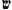
Shin: Fire (The Aeon)Neophyte: Grade of an initiate who has achieved the level of consciousness represented by Malkuth, the tenth sephira on the Tree of Life.
Nephesh: See Parts of the Soul.
Neshamah: See Parts of the Soul.
Netzach—Victory: The seventh sephira on the Tree Life; the sphere of Venus. In tarot, Netzach is home to the small-card sevens.
Notariqon: One of several Qabalistic techniques of manipulating letters and words in order to discover additional esoteric meanings. There are two kinds of Notariqon. The first condenses a word, sentence, or phrase into a simpler one by reading only the initial letters in an attempt to retrieve a more fundamental truth. The second expands a word into a sentence whose component words are the initials of the original word.
Nuit (alternate spelling “Nuith,” “Nut”): “The First Deity of the Thelemic Trinity; traditionally the Egyptian Goddess of the night sky. She is the ‘star goddess who is the category of unlimited possibility.'337 Upon the Stélé of Revealing, and in Egyptian art, she is depicted as an azure goddess, tall and slender, arching of the earth (similar in appearance to the Greek letter Omega). She is conceptualized as the infinity of an ultimately expanded universe (the circumference of the circle). Al things, therefore, are contained within her body. Qabalists may wish to consider the similarities to the Second Veil of the Negative proceeding Kether, AIN SOPH (No Limit).”338
Nun—: Fish. Hebrew equivalent to English letter N and the number fifty. On the Tree of Life, it is path 24, joining the sixth sephira, Tiphareth, with the seventh sephira, Netzach. Represents the zodiac sign Scorpio. Tarot trump—Death. Orphic Egg: Alchemical symbol showing an egg (sometimes winged) entwined with a serpent. Fertilization and the subsequent care of the Orphic egg is the subject of an alchemical allegory of the great work. In the Thoth Tarot, the trumps Magus, Lovers, Hermit, Death, and Art, either display the Orphic egg or are concerned with its care.
Osiris: Egyptian god of the dead, brother/husband of Isis, and father of Horus. In the Thoth Tarot, Osiris is portrayed in various aspects in trumps the Hierophant and Death. See Aeon of Osiris.
Parts of the Soul: The Hebrew Qabalah divides the human soul into various levels that reflect, on a microcosmic level, universal levels of consciousness and being. One very simple mode of division is by four (corresponding to the four letters of the Tetragrammaton,
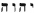
, Yod Hé Vau Hé). The tarot is, in many ways, an expression of this fourfold division. The four parts of the soul and some of their correspondences are as follows:Nephesh—The Animal Soul: The first and lowest of the four parts of the soul; corresponds to the final Hé of the Tetragrammaton, the element of earth, the suit of Disks in the tarot, and to Assiah, the material world, the first and lowest of the four Qabalistic worlds.
Ruach—The Intellect
The second of the four parts of the soul; corresponds to the Vau of the Tetragrammaton, the element of air, the suit of Swords in the tarot, and to Yetzirah, the formative world.
Neshamah—The Soul Intuition
The third and second highest of the four parts of the soul; corresponds to the frst Hé of the Tetragrammaton, the element of water, the suit of Cups in the tarot, and to Briah, the creative world.
Chiah—The Life Force
The fourth and highest of the four parts of the soul; corresponds to the Yod of the Tetragrammaton, the element of fre, the suit of Wands in the tarot, and to Atziluth, the archetypal world.
Pé—: Mouth. Hebrew equivalent to English letter P or F and the number eighty. On the Tree of Life, it is path 27, joining the seventh sephira, Netzach, with the eighth sephira, Hod. Represents the planet Mars. Tarot trump—the Tower.
Pentacles: Another name for Disks. See Suits.
Planets: The Thoth Tarot deals primarily with the seven planets of the ancients: Saturn (the Universe), Jupiter (Fortune), Mars (the Tower), Sol (the Sun), Venus (the Empress), Mercury (the Magus), and Luna (the Priestess). This is the order in which the planetary spheres (sephiroth 3 through 9) are arranged on the Tree of Life. These seven planets are also allotted (in this same repeating order) to the thirty-six small cards of the Thoth Tarot, starting with Saturn on the Five of Wands (at 0° Leo) and changing every decan (10°), until every decan of the year has been assigned a planet. (The last decan of Pisces and the first decan of Aries are both assigned the planet Mars.)
Precession of the Equinox: See Astrological Age.
Prince: In the Thoth Tarot, the Prince is the secondary male figure of the court cards. He is the Vau of the Tetragrammaton and represents aspects of God the Son and the Holy Guardian Angel of each human being. He is the son of the Knight and Queen and brother/lover (and in certain ways, the father) of the Princess. In some traditional decks, he is called the Knight. He is the airy aspect of his suit and is shown standing in a chariot. His position on the Tree of Life is in the sixth sephira, Tiphareth. See Yod Hé Vau Hé.
Prince Scale of Color: The Prince scale combines the colors of the King and Queen scales.
Princess: In the Thoth Tarot, the Princess is the secondary female figure of the court cards. In some traditional decks, she is called the Page. She is the final Hé of the Tetragrammaton and represents aspects of the unredeemed soul of each of us. Her position on the Tree of Life is the tenth sephira, Malkuth. (See Yod Hé Vau Hé.) She is the daughter of the Knight and Queen and sister/lover of the Prince. (In certain ways, she is also viewed as the daughter of the Prince.) She is the earthy aspect of her suit and is shown standing. In the Western Mysteries, the quest for spiritual liberation is characterized in the story of a sleeping Princess (each of us) who is awakened by a Prince (our Holy Guardian Angel), who marries the Princess and makes her Queen (God the Mother), which at the same time makes him the King (God the Father). Unlike the Knight, Queen, and Prince, the Princess does not rule a 30° period of the year. Instead, she is considered the throne of the aces and rules, with her ace, one quarter of the surface of the Earth. See chapter 11.
Princess Scale of Color: The Princess scale represents the lowest, most mixed and polluted levels of light. See chapter 10.
Qabalah (alternate spellings, Cabala, Kabbalah): Known as the Holy Kabbalah in esoteric Judaism, Cabala in mystic Christianity, and Qabalah in Western Hermeticism, the Qabalah is the foundation of nearly all the mystical systems of the West, including astrology, magick, and tarot.
Qabalistic Worlds: The Qabalah divides the one cosmic reality into four descending levels of divine consciousness or worlds (corresponding to the four letters of the Tetragrammaton, Yod Hé Vau Hé). These four worlds reflect on a macrocosmic level the four microcosmic aspects of the human soul. The tarot is, in many ways, an expression of this four-fold division. The four Qabalistic worlds and some of their correspondences are as follows:
Assiah—The Material World.
The lowest of the four Qabalistic worlds; corresponds to the final Hé of the Tetragrammaton, the element of earth, and the suit of Disks in the tarot. In Assiah, the impurities produced by the degeneration of the light as it passes through the worlds above it (Atziluth, Briah, and Yetzirah) are crystallized to form the material world and human existence. Assiah's corresponding part in the human soul is the Nephesh—the animal soul.
Yetzirah—The Formative World
The second to the lowest of the four Qabalistic worlds; corresponds to the Vau of the Tetragrammaton, the element of air, and the suit of Swords in the tarot. In Yetzirah, the universal organization of Briah becomes specific, and a hierarchy of angels with individual duties is established. This world is the mind and the mind's eye of the deity. Yetzirah's corresponding part in the human soul is the Ruach—the intellect.
Briah—The Creative World
The third and second highest of the four Qabalistic worlds; corresponds to the first Hé of the Tetragrammaton, the element water; and the suit of Cups in the tarot. In Briah, the pure light of Atziluth begins to become organized. This is the throne and abode of the highest archangels and could be viewed as the heart of the deity. Briah's corresponding part in the human soul is the Neshamah—the divine soul intuition.
Atziluth—The Archetypal World
The highest of the four Qabalistic worlds; corresponds to the Yod in the Tetragrammaton, the element fire, and the suit of Wands in the tarot. In Atziluth, the male and female aspects of the deity are united in bliss. The remaining three worlds (Briah, Yetzirah, and Assiah) are the product of this union, and continue to diminish in purity. Atziluth could be considered the will of the deity in its purest aspect. Atzuluth's corresponding part in the human soul it is the Chiah—the life force.
Qoph—
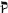
: Back of Head. Hebrew equivalent to English letter Q and the number 100. On the Tree of Life, it is path 29, joining the seventh sephira, Netzach, with the tenth sephira, Malkuth. Represents the zodiac sign Pisces. Tarot trump—the Moon.Quadruplicities of the Zodiac: The twelve signs of the zodiac are categorized, according to element, into four groups of three signs. The four Quadruplicities are as follows:
Fire Signs: Aries, Leo, Sagittarius
Water Signs: Cancer, Scorpio, Pisces
Air Signs: Libra, Aquarius, Gemini
Earth Signs: Capricorn, Taurus, Virgo
Queen: In the Thoth Tarot, the Queen is the primary female figure of the court cards. She is the first Hé of the Tetragrammaton and represents aspects of God the Mother. She is the wife of the Knight and mother of the Prince and Princess. She is the watery aspect of her suit and is shown enthroned. Her position on the Tree of Life is in the third sephira, Binah. See Yod Hé Vau Hé.
Queen Scale of Color: Queen scale of color actually manifests as the eye beholds them (shades, primary and secondary colors, etc.) See chapter 10.
Ra-Hoor-Khuit (alternate spellings, Ra-Hoor Khut, Ra-Hoor-Khuit, and Ra-Hoor-Khu-it): “The Third Deity of the Thelemic Trinity. The Crowned and Conquering Child of the union of Nuit and Hadit. As Nuit's expansion and Hadit's contraction are both infinite, so too must be their points of contact. This infinite contact creates a field of operation in which the universe can manifest. ‘He is, however, known under his special name, Heru-ra-ha. A double god; his extroverted form is Ra-hoor-khuit; and his passive or introverted form Hoor-pa-kraat.'”339
“Qabalists may wish to consider the similarities to the Third Veil of the Negative proceeding Kether, AIN SOPH AUR (Limitless Light); also Kether itself. In one respect He is the fundamental archetype of the God-Man, and the Holy Guardian Angel.”340
Rajas: See Gunas.
Resh—
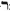
: Head or Face. Hebrew equivalent to English letter R and the number 200. On the Tree of Life, it is path 30, joining the eighth sephira, Hod, with the ninth sephira, Yesod. Represents the planet Sol. Tarot trump—the Sun.Rose Cross: See chapter 8.
Ruach: See Parts of the Soul.
Salt (Alchemical): “The inactive principle of Nature; Salt is matter which must be energized by Sulfur to maintain the whirling equilibrium of the Universe.”341
Samekh—
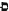
: Tent peg. Hebrew equivalent to English letter S and the number sixty. On the Tree of Life, it is path 25, joining the sixth sephira, Tiphareth, with the ninth sephira, Yesod. Represents the zodiac sign Sagittarius. Tarot trump—Art.Satvas: See Gunas.
Shemhamphorasch: The seventy-two-part Divided Name of God. OE.balistic tradition points out that three consecutive verses from the Book of Exodus are each composed of seventy-two Hebrew letters. These three verses, when arranged in three rows (the top row reading from right to left, the middle row reading from left to right, the bottom row reading from right to left), yield seventy-two columns of three letters that are designated Shemhamphorasch, the Divided Name of God. Each of these seventy-two aspects of deity is assigned an angel who is the executor of its will. The angel names are created by adding (to the end of each of the three letter names) the letters IH (for an angel of mercy) or the letters AL (for an angel of judgment). Each of these seventy-two angels is assigned five degrees of the zodiacal year. Because each of the thirty-six small cards of the tarot represents one decan (period often degrees), two angels of the Shemhamphorasch are resident in each small card.
Shin—: Tooth. Hebrew equivalent to English letters Sh and the number 300. On the Tree of Life, it is path 31, joining the eighth sephira, Hod, with the tenth sephira, Malkuth. Represents the element fire and the element spirit. Tarot trump—the Aeon.
Significator: Prior to using tarot in divination, one card (usually a court card) is chosen to represent the querent. This card is designated the Significator.
Simple Letters (Hebrew): Together with the three mother letters and the seven double letters of the Hebrew alphabet, there are twelve simple letters. The sephir Yetzirah attributes them to the twelve signs of the zodiac. Translations vary as to the zodiacal assignments. The Adepts of the Golden Dawn chose the following, with the exceptions of Tzaddi and Hé. This is the assignment of the Thoth Tarot.
Tzaddi: Aries (The Emperor)
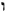
Vau: Taurus (The Hierophant)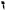
Zain: Gemini (The Lovers)Cheth: Cancer (The Chariot)
Teth: Leo (Lust)
Lamed: Libra (Adjustment)
Nun: Scorpio (Death)
Samekh: Sagittarius (Art)
Ayin: Capricorn (The Devil)
Hé: Aquarius (The Star)
Qoph: Pisces (The Moon)
Star: Atu XVII of the Thoth Tarot. See Hé, Aquarius.
Stèle of Revealing: Twenty-fifth dynasty Egyptian funeral marker of Ankh-af-na-khonsu, a notable political and religious figure of several royal administrations, which triggered a series of psychic and magical events that culminated with Crowley's reception of The Book of the Law.
Suits: The fifty-six cards of the Minor Arcana of the tarot are divided into four suits: Wands, Cups, Swords, and Disks. These suits represent, respectively, the elements of fire, water, air, and earth; the Qabalistic worlds of Atziluth, Briah, Yetzirah, and Assiah; and the four parts of the human soul of Chiah, Neshamah, Ruach, and Nephesh. The aces of each suit are the master cards of the suit, and can be thought of as containing within themselves the four court cards and the nine small cards of their respective suits.
Sulfur (Alchemical): “Sulfur is the male fiery energy of the Universe, the Rajas of Hindu philosophy. This is the swift creative energy, the initiative of all Being.”342
Sun: Atu XIX of the Thoth Tarot. See Resh.
Supernal Triad—Kether-Chokmah-Binah: The three sephiroth existing above the Abyss. Even though each of the three sephiroth stand as separate emanations, they really comprise a trinity, each unit reflecting a different aspect of the supreme monad (Kether). In tarot, the supernal triad is home to court-card Knights (in Chokmah) and Queens (in Binah), and to small-card aces, twos, and threes in Kether, Chokmah, and Binah respectively.
Sword: Magical weapon representing the magician's mind. The sword represents the Ruach (intellect) part of the soul and the Qabalistic world of Yetzirah (formative world).
Swords: See Suits. In tarot readings, Swords often indicate matters of the mind, quarreling, lawsuits, anxiety, health, and science.
Tahuti: See Thoth.
Tamas: See Gunas.
Tau—
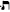
: Mark or Cross. Hebrew equivalent to English letters Th and the number 400. On the Tree of Life, it is path 31, joining the ninth sephira, Yesod, with the tenth sephira, Malkuth. Represents the planet Saturn and element earth. Tarot trump—the Universe.Teth—: Serpent. Hebrew equivalent to English letter T and the number nine. On the Tree of Life, it is path 19, joining the fourth sephira, Chesed, with the fifth sephira, Geburah. Represents the zodiac sign Leo. Tarot trump—Lust.
Tetragrammaton: YHVH—. See Yod Hé Vau Hé.
Thelema: One of several words in Greek that mean “will.” The word first received attention in 1535, when the French satirist Francois Rabelais wrote of the Abbey of Thelema in his colossal work, Gargantua and Pantagruel. Engraved above the entrance to the Abbey was the Abbey's motto, Fay çe que vouldras, “Do what thou wilt.” In that work, it was the watchword of individual freedom. The word appears in chapter 1, Verse 39 of The Book of the Law, where Nuit tells the Scribe, “The word of the Law is θελημα” Among other things, Thelema has come to be known as the philosophy of Life that presumes that each individual, like each star in the heavens, is possessed with a unique orbit and function in the universe. This, for lack of a better word, is our will. If each person properly understands and executes this will, his or her life will be in harmony with the forces and energies of the entire universe and we will fulfill our full potential as cosmic citizens.
Thelemite: One who attempts to discover, then execute, his or her will. See Thelema.
Thoth: Tahuti, the ibis-headed Egyptian god of wisdom. Patron deity of the tarot, Thoth is said to have taught humanity language and the written word. As messenger of the gods, he is identified with the Greek Hermes and the Roman Mercury.
Tiphareth—Beauty: The sixth sephira on the Tree Life; the sphere of the Sun. In tarot, Tiphareth is the home of the court-card Princes and the small-card sixes.
TO MEGA THERION: Greek for “The Great Beast,” TO MEGATHE-RION was the motto Crowley took upon achieving the grade of Magus, 9° = 2□ on October 12, 1915 E.V.
Tower: Atu XVI of the Thoth Tarot. See Pé.
Tree of Life—Etz ha-Chayim: Schematic representation of the fundamental statement of the Sepher Yetzirah, which states “Deity with the aid of numbers, letters, &words created the Universe in thirty-two mysterious paths of wisdom. They consist often sephiroth out of nothing and of Twenty-two Letters.”343 The Tree of Life is usually represented as ten circular emanations (sephiroth) joined by twenty-two paths, to which the letters of the Hebrew alphabet are attributed.
Triplicities of the Zodiac: The twelve signs of the zodiac are categorized, according to modes, into three groups of four signs. The Triplicities are as follows:
Cardinal Signs: Aries, Cancer, Libra, Capricorn
Fixed Signs: Leo, Scorpio, Aquarius, Taurus
Mutable Signs: Sagittarius, Pisces, Gemini, Virgo
Trump: See Atu.
Typhon: Graeco-Egyptian reptilian deity associated with the active forces of destruction. In the Thoth Tarot, Typhon appears with Hermanubis and the Sphinx as one of the three beasts of Atu X, Fortune.
Tzaddi—: Fish Hook. Hebrew equivalent to English letters Tz or Z and the number ninety. On the Tree of Life, it is path 28, joining the seventh sephira, Netzach with the ninth sephira, Yesod. Represents the zodiac sign Aries. Tarot trump—the Emperor.
Universe: Atu XXI of the Thoth Tarot. See Tau, Saturn.
V.I.T.R.I.O.L.: The universal solvent of alchemy created by the proper combination and balancing of the alchemical elements of mercury, salt, and sulfur. Its letters are the initials of the alchemical motto: Visita interiora terrae rectificando invenies occultam lapidem—“Visit the interior parts of the earth: by rectification thou shalt find the hidden stone.” In the Thoth Tarot, this phrase appears on Atu XIV, Art.
Vau—: Nail. Hebrew equivalent to English letters V, W, U, and O and the number six. On the Tree of Life, it is path 16, joining the second sephira, Chokmah, with the fourth sephira, Chesed. Represents the zodiac sign Taurus. Tarot trump—the Hierophant.
Vision and the Voice: Liber XXX Aerum vel Saeculi sub figura CCCCXVII: being the Angels of the 30 Aethyrs of the Vision and the Voice (1911 E.V).
Wand: Magical weapon representing the magician's will. The wand represents the Chiah (life force) part of the soul, and the Qabalistic world of Atziluth (archetypal world) .
Wands: See Suits. In tarot readings, Wands often indicate matters of power, endeavor, struggle, business, character, career.
Yesod—Foundation: The ninth sephira on the Tree of Life; the sphere of the Moon. In tarot, Yesod is the home of the small-card nines.
Yetzirah: See Qabalistic Worlds
Yod Hé Vau Hé———YHVH: The great Qabalistic Name of God, commonly pronounced Jehovah. Referred to as the Tetragrammaton. Qabalists categorize everything in creation, including the human soul, into four divisions, each corresponding to one of the four letters of the Great Name. In the tarot, the suit of Wands represents Yod; Cups, the first Hé; Vau, Swords; and the final Hé, Disks. See Parts of the Soul and Qabalistic Worlds.
Yod—: Hand. Hebrew equivalent to English letters Y and I and the number ten. On the Tree of Life, it is path 20, joining the fourth sephira, Chesed, with sixth sephira, Tiphareth. Represents the zodiac sign Virgo. Tarot trump—the Hermit.
Zain—: Sword. Hebrew equivalent to English letter Z and the number seven. On the Tree of Life, it is path 17, joining the third sephira, Binah, with the sixth sephira, Tiphareth. Represents the zodiac sign Gemini. Tarot trump—the Lovers.